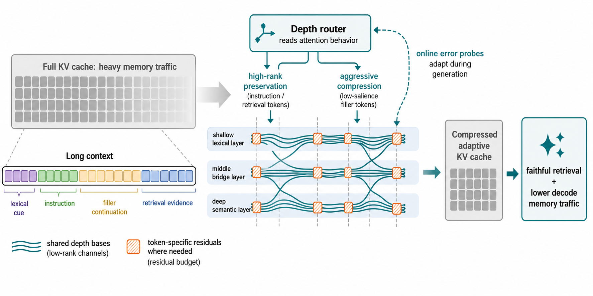

Why it matters왜 중요한가
This archive's KV thread has spent a month asking how much to compress. DepthWeave-KV asks a question one level up: compression budget is not a scalar, it is a surface over (token × layer) — and almost every method flattens one of those two dimensions by accident.
이 아카이브의 KV 계열 논문들은 한 달 동안 얼마나 압축할 것인가를 물어왔다. DepthWeave-KV는 한 단계 위의 질문을 던진다. 압축 예산은 스칼라가 아니라 (토큰 × 레이어) 위의 곡면이며, 대부분의 기법은 그 두 차원 중 하나를 무심코 평평하게 만들어 버린다.
The observation the paper builds on is not new — MiniCache showed depth redundancy, H2O and SnapKV showed token redundancy — but the interaction is. A token that is pure filler in a deep semantic layer may be an essential lexical anchor in a shallow one, and the same entity mention may need faithful reconstruction at layer 8 and none at layer 24. Uniform budgets along either axis therefore fail in a specific, measurable way: they preserve average perplexity while quietly destroying retrieval. The authors cite three 2025–2026 papers making exactly that complaint (Chen et al.'s Pitfalls of KV Cache Compression, Haverbeck et al., Bui et al.), and their own numbers reproduce it — StreamingLLM holds 55.4% average score but drops to 79.6% on needle retrieval, a 19-point collapse relative to a full cache's 98.7%.
논문이 딛고 선 관찰 자체는 새롭지 않다. MiniCache는 깊이 방향 중복을, H2O·SnapKV는 토큰 방향 중복을 보였다. 새로운 것은 그 둘의 상호작용이다. 깊은 의미 레이어에서는 순수한 filler인 토큰이 얕은 레이어에서는 핵심적인 어휘 앵커일 수 있고, 같은 개체 언급이 8층에서는 충실한 복원을 요구하면서 24층에서는 전혀 요구하지 않을 수 있다. 따라서 어느 한 축을 따라 균일한 예산을 주면 아주 구체적이고 측정 가능한 방식으로 실패한다. 평균 perplexity는 지키면서 검색 성능만 조용히 무너뜨리는 것이다. 저자들은 정확히 이 지적을 하는 2025~2026년 논문 세 편(Chen 등의 Pitfalls of KV Cache Compression, Haverbeck 등, Bui 등)을 인용하고, 자신들의 수치로도 이를 재현한다. StreamingLLM은 평균 점수 55.4%를 유지하지만 needle 검색에서는 79.6%로 떨어져, 풀 캐시의 98.7% 대비 19점이 무너진다.

By the numbers핵심 숫자
Main results at 64K context64K 컨텍스트 주요 결과
| Method | Avg. Score (%) | Needle Acc. (%) | KV Mem. Red. (×) | Decode (tok/s) |
|---|---|---|---|---|
| Full KV Cache | 63.8 | 98.7 | 1.0 | 42.1 |
| StreamingLLM | 55.4 | 79.6 | 5.8 | 58.7 |
| MiniCache | 59.8 | 89.4 | 6.4 | 63.2 |
| KVSharer | 59.5 | 88.7 | 6.7 | 64.1 |
| Eigen Attention | 60.2 | 90.1 | 6.2 | 63.7 |
| TailorKV | 61.4 | 92.6 | 6.5 | 65.0 |
| DepthWeave-KV | 62.9 | 96.1 | 8.3 | 72.8 |
The idea in four pieces아이디어를 네 조각으로
Cross-depth residual factorization
Layers are partitioned into overlapping depth windows of size w. Within each window and head, shared bases BK, BV ∈ ℝrb×d are kept once, and each layer reconstructs its state as a coefficient vector times the shared basis plus a gated residual. The distinction from MiniCache and KVSharer is precise: adjacent layers are not forced onto identical cache states, they share a channel subspace, and their deviations from it are restored selectively.
레이어를 크기 w의 겹치는 depth window로 나눈다. 각 window와 헤드마다 공유 기저 BK, BV ∈ ℝrb×d를 한 번만 보관하고, 각 레이어는 자기 상태를 계수 벡터 × 공유 기저 더하기 게이팅된 잔차로 복원한다. MiniCache·KVSharer와의 차이는 명확하다. 인접 레이어를 동일한 캐시 상태로 강제하는 것이 아니라 채널 부분공간을 공유하게 하고, 거기서 벗어난 편차만 선택적으로 되살린다.
Token-conditional depth router
A shallow router scores each token from four online features — accumulated attention mass, maximum attention spike, delimiter/instruction-boundary indicators, and the previous interval's reconstruction error — then assigns one of three residual ranks. Crucially it runs on cache metadata only, so it costs no extra forward pass through the base LLM. The adaptive threshold τm is what holds the memory budget.
얕은 라우터가 네 가지 온라인 특징 — 누적 어텐션 질량, 최대 어텐션 스파이크, 구분자/지시문 경계 표시, 직전 구간의 복원 오차 — 로 각 토큰에 점수를 매기고 세 단계 잔차 랭크 중 하나를 부여한다. 결정적으로 캐시 메타데이터만 보고 동작하므로 베이스 LLM을 한 번 더 통과시키는 비용이 들지 않는다. 메모리 예산을 지켜주는 것은 적응적 임계값 τm이다.
Probes that measure the right error
Every p decode steps a few heads are evaluated twice — once compressed, once with a temporarily materialised higher-fidelity cache — and the discrepancy is measured after attention aggregation, not in KV space. That choice is the paper's sharpest argument: reconstruction error on cached vectors is a proxy, while error on Attn(Q,K̂,V̂) is the quantity that actually propagates into the next hidden state. No calibration set is needed.
p 디코드 스텝마다 일부 헤드를 두 번 평가한다. 한 번은 압축 상태로, 한 번은 일시적으로 고정밀 캐시를 실체화해서. 그리고 그 차이를 KV 공간이 아니라 어텐션 집계 이후에서 잰다. 이 선택이 논문에서 가장 날카로운 주장이다. 캐시 벡터의 복원 오차는 대리 지표일 뿐이고, Attn(Q,K̂,V̂)의 오차야말로 실제로 다음 hidden state로 전파되는 양이기 때문이다. 캘리브레이션 셋이 필요 없다.
A fused kernel, because bandwidth is the limit
Factorised caches normally lose their advantage at reconstruction time: you rebuild the full KV tensor, write it to global memory, then read it back for attention. The fused CUDA kernel does basis lookup, residual dequantization, coefficient multiplication and attention scoring in one pass so reconstructed tensors never round-trip through global memory. Ablating it leaves quality untouched (62.8 vs 62.9) but costs 15.0% of throughput — a clean separation of the algorithmic and systems contributions.
인수분해된 캐시는 보통 복원 시점에 이점을 잃는다. 전체 KV 텐서를 다시 만들어 글로벌 메모리에 쓰고, 어텐션을 위해 도로 읽어야 하기 때문이다. 융합 CUDA 커널은 기저 조회·잔차 역양자화·계수 곱·어텐션 스코어 계산을 한 번에 처리해 복원된 텐서가 글로벌 메모리를 왕복하지 않게 한다. 이것만 제거하면 품질은 그대로(62.8 vs 62.9)지만 처리량이 15.0% 빠진다. 알고리즘 기여와 시스템 기여가 깔끔하게 분리된다.
How it works어떻게 작동하나
- Prefill — sketch the shared bases.Prefill — 공유 기저를 스케치한다. After the first compressed prefix block, a small randomised low-rank sketch of cached keys and values is computed per depth window, independently for each head and separately for K and V. Heads keep their specialisation; only redundant channel structure is pooled. 첫 압축 프리픽스 블록 이후, depth window별로 캐시된 키·값의 작은 무작위 저랭크 스케치를 계산한다. 헤드마다 독립적으로, K와 V는 따로. 헤드의 특화는 유지되고 중복된 채널 구조만 모인다.
- Route — decide who gets a residual.Route — 누가 잔차를 받을지 정한다. The router scores tokens and assigns ρ = 0 or 2 to continuation tokens, 4 to structural ones, 8 to retrieval-critical spans. Tokens routed to zero rank live entirely inside the shared basis — there is no hard eviction boundary anywhere in the design. 라우터가 토큰에 점수를 매겨 이어쓰기 토큰에는 ρ = 0 또는 2, 구조적 토큰에는 4, 검색에 결정적인 구간에는 8을 배정한다. 랭크 0으로 라우팅된 토큰은 전적으로 공유 기저 안에서만 존재한다. 설계 어디에도 딱딱한 eviction 경계가 없다.
- Store — quantize asymmetrically.Store — 비대칭적으로 양자화한다. Coefficient vectors go to 8-bit blockwise quantization, residuals to 4-bit group quantization at the routed rank. The compression ratio is therefore the product of three effects — basis sharing across depth, routed residual rank, and bit width — not one knob. 계수 벡터는 8비트 블록 단위 양자화로, 잔차는 라우팅된 랭크에서 4비트 그룹 양자화로 저장한다. 따라서 압축률은 하나의 손잡이가 아니라 깊이 방향 기저 공유·라우팅된 잔차 랭크·비트 폭이라는 세 효과의 곱이다.
- Decode — reconstruct inside the kernel.Decode — 커널 안에서 복원한다. The fused kernel loads shared basis rows, dequantizes only the routed residual channels, rebuilds the needed K/V fragments and feeds them straight into attention scoring, without materialising the cache in global memory. 융합 커널이 공유 기저 행을 읽고, 라우팅된 잔차 채널만 역양자화하고, 필요한 K/V 조각을 재구성해 곧바로 어텐션 스코어 계산에 넣는다. 캐시를 글로벌 메모리에 실체화하지 않는다.
- Probe — and retune mid-generation.Probe — 그리고 생성 도중 다시 조율한다. If post-attention error exceeds a window's tolerance, τm drops and more tokens are promoted to higher rank; if it stays low across several intervals, τm rises and residual storage shrinks. Only the residual gates and router parameters are ever trained — the base model weights are untouched. 어텐션 이후 오차가 window의 허용치를 넘으면 τm을 낮춰 더 많은 토큰을 높은 랭크로 올리고, 여러 구간 동안 낮게 유지되면 τm을 올려 잔차 저장량을 줄인다. 학습되는 것은 잔차 게이트와 라우터 파라미터뿐이며, 베이스 모델 가중치는 건드리지 않는다.
What to take away그래서, 가져갈 것
The ablation that matters most is the one the authors half-bury: shared bases only, no token residuals reaches 10.2× — the highest compression in the paper — and collapses to 58.9% average score, worse than MiniCache, KVSharer, ChunkKV, TailorKV and Eigen Attention. Depth sharing alone is not a viable compression axis; it only works when something else is paying for the exceptions.
가장 중요한 ablation은 저자들이 반쯤 묻어둔 것이다. 공유 기저만, 토큰 잔차 없음 변형은 논문 내 최고 압축률인 10.2×에 도달하지만 평균 점수 58.9%로 무너져 MiniCache·KVSharer·ChunkKV·TailorKV·Eigen Attention 모두보다 나쁘다. 깊이 공유만으로는 성립하는 압축 축이 아니며, 예외를 대신 지불해줄 무언가가 있을 때만 작동한다.
Measuring error after attention aggregation rather than on cached vectors is the transferable idea here, and it is cheap. Any compression scheme with a tunable budget can adopt the same probe: reconstruct twice on a few heads, compare outputs, move the threshold. It costs no calibration corpus and directly targets the quantity that reaches the next layer.
캐시 벡터가 아니라 어텐션 집계 이후에서 오차를 재는 것이 여기서 이식 가능한 아이디어이고, 값도 싸다. 조절 가능한 예산을 가진 어떤 압축 기법이든 같은 프로브를 쓸 수 있다. 몇 개 헤드에서 두 번 복원해 출력을 비교하고 임계값을 옮기면 된다. 캘리브레이션 코퍼스가 필요 없고, 다음 레이어에 실제로 도달하는 양을 곧바로 겨냥한다.
Rank allocation is becoming the shared vocabulary of this archive's compression thread. DynaCalKV (2607.24331) allocates rank across heads, STAR-KV (2606.08382) adapts it by soft thresholding, AnchorKV (2608.02901) splits anchor from residual, PuzzleKV (2608.23843) works page-wise. DepthWeave-KV adds the depth axis and, unusually, closes the loop online. The open question none of them settles: at a genuinely matched memory budget, does the extra machinery still win?
랭크 배분이 이 아카이브의 압축 계열에서 공통 어휘가 되어가고 있다. DynaCalKV(2607.24331)는 헤드 사이에, STAR-KV(2606.08382)는 soft thresholding으로, AnchorKV(2608.02901)는 앵커와 잔차를 분리해, PuzzleKV(2608.23843)는 페이지 단위로 랭크를 배분한다. DepthWeave-KV는 여기에 깊이 축을 더하고, 드물게도 그 루프를 온라인으로 닫는다. 어느 논문도 해결하지 못한 열린 질문은 이것이다. 진짜로 동일한 메모리 예산에서도 이 추가 기계장치가 여전히 이기는가?